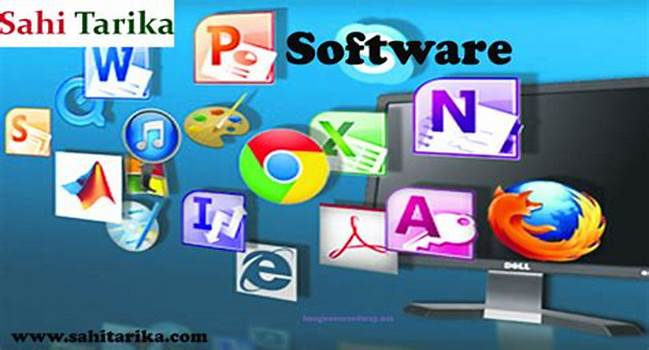

Elementos de un sistema de informacion computacional
Equipo computacional: hardware necesario para que el sistema de informacion funcione,integrado por computadoras y eqipos periferico conectados a ellos.
Recursos Humanos: son las personas que interactuan con el sistema de informacion,suministran datos o utilizan el sistema para generar datos.
Fuente: son los datos e informacion que se introducen en el sistema,es decir,son las entradas requeridas para que el sistema informatico funcione.
Programas: software ejecutado por la computadora,el cual procesa la informacion de ntrada para generar los resultados esperados

Telecomunicaciones: abarca el software y hardware que permite las transmision en forma elctrica de textos e imagenes,entre otros
Politicas y reglas de operacion: aplicadas alos procedimientos y mecanismos para hacer que una aplicacion de computadora trabaje de acuerdo con estas o regir la parte funcional del proceso administrativo de la empresa
Pagina pricipal
Atras